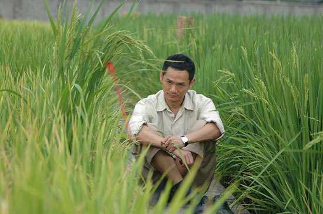
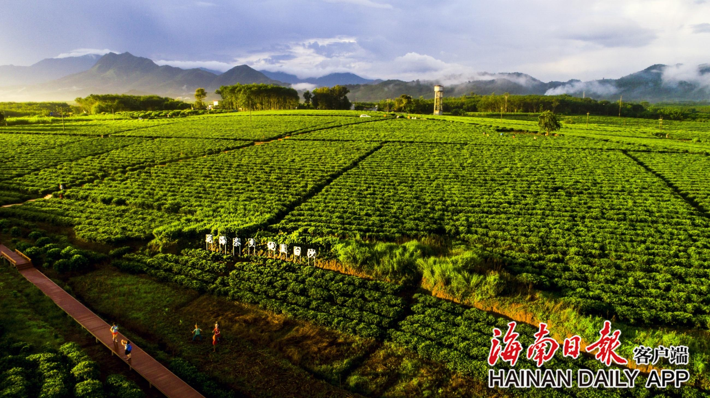

袁隆平（1930年9月7日-2021年5月22日,男，汉族，生于北平（今北京市），无党派人士，江西省九江市德安县人。享誉海内外的著名农业科学家，中国杂交水稻事业的开创者和领导者，中国共产党的亲密朋友，无党派人士的杰出代表，“共和国勋章”获得者，湖南省政协原副主席，国家杂交水稻工程技术研究中心原主任，中国工程院院士，被誉为“杂交水稻之父”。
当然，如果我只是简单地介绍一下袁老，大可不必给他再做一个网页，因为百度百科上都有。我要说的是，即使成功如他，一生中也难免挫折不断。
“文革”刚开始时，他在安江农校试验园栽种的杂交水稻秧苗全部被砸，几年的研究成果付诸东流。所幸他的学生尹华奇和李必湖事先偷偷藏了3盆，这才避免了秧苗的“灭顶之灾”。1968年，“幸存”的3盆秧苗经过几次繁育，已经能插满两分试验田。然而，试验田的秧苗再一次遭到人为破坏，被拔得一片狼藉。他们翻遍试验田，才找到5株被掩埋在烂泥中的残存禾苗。面对如此重创，袁隆平坚定地说：“我搞科研为的是社会主义建设，要我放弃杂交水稻的研究绝对办不到！”磨难还没有结束，不久，袁隆平被调离安江农校，接受劳动锻炼。水稻雄性不育科研经费被取消，他的学生被停发工资，实验也终止了。恢复工作后，袁隆平急切地想要加快研究速度，抢回曾经失去的时间。他带领助手先后用1000多个品种，做了3000多个杂交组合的试验，结果并不理想。从1964年发现水稻雄性不育株6年来，尽管袁隆平和助手倾注了全部心血，但都没研究出理想中的雄性不育株，困局迟迟不能突破。
袁隆平的杂交理论正式提出后，育种界的同仁，立刻发出了一片质疑之声。这道理简单不复杂，因为早在1926年，美国人琼斯就发现了水稻雄花不育的现象，紧接着日本、美国和菲律宾等地的专家，都进行过杂交水稻的实验，可是结果很悲催，他们全都失败了。因为别的学者甚至国际权威都无法成功，崭露头角的袁老重新拾起这一方法招致不少人的唱衰与嘲笑。
|  |  |